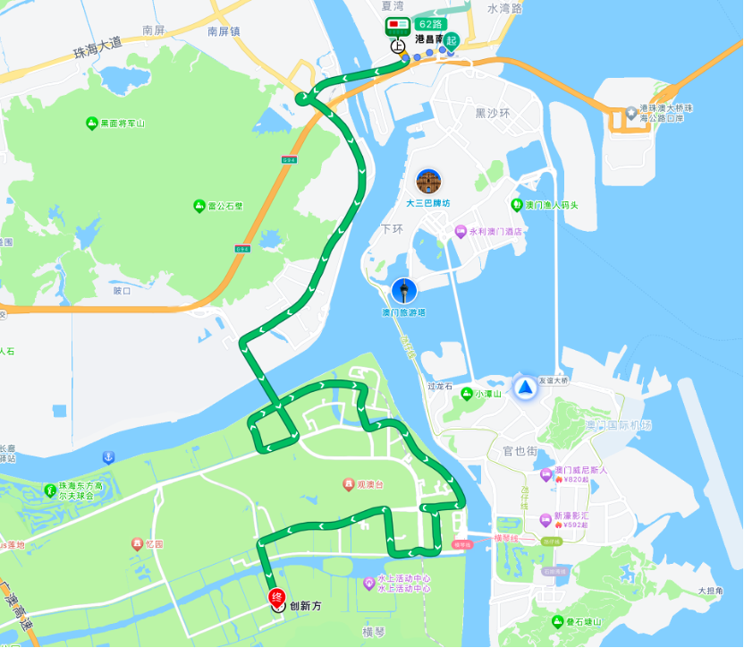

地点：珠海市香洲区横琴镇创新方汇信文化办公楼
🌟 打车：
根据珠海机场指示步行前往金湾机场T1航站楼网约车上车点 → 打车前往横琴创新方（大约27分钟，价格视时间而定）
乘坐公共交通：
步行至珠海机场城轨站（约15分钟）→ 乘坐城轨至横琴站（￥17，约20分钟）→ 步行至横琴口岸东公交站（约7分钟）→ 乘坐62路公交车至创新方公交站（￥1，9站，约16分钟）
提示：到达横琴站后更多方式请见第七页
自己驾车：
使用导航（约22公里，27分钟，需支付￥14过桥费）
🌟 乘坐公共交通：
从机场前往轻轨站B口 → 乘坐凼仔线至莲花站 → 转乘横琴线至横琴轻轨站 → 根据指示过关 → 后续请见“横琴站”或“从口岸出发”部分
🌟 打车：
珠海站A出站口负二层停车场网约车上车点 → 打车前往横琴创新方（约30分钟）
乘坐公共交通：

步行至港昌南公交站（约1.3公里，19分钟）→ 乘坐62路公交车至创新方（33站，约1小时）
自己驾车：
使用导航（约17公里，33分钟）
🌟 骑行：
使用导航骑行至创新方（约4.3公里，15分钟）
🌟 打车：
横琴站地面层 → 步行至西北侧路口 → 打车前往创新方（约7分钟）
乘坐公共交通：
步行至横琴口岸东公交站 → 乘坐62路公交车至创新方公交站（￥1，9站，约16分钟）
港珠澳大桥珠海口岸、横琴口岸
请根据指示过关后参照横琴站或打车导航前往创新方